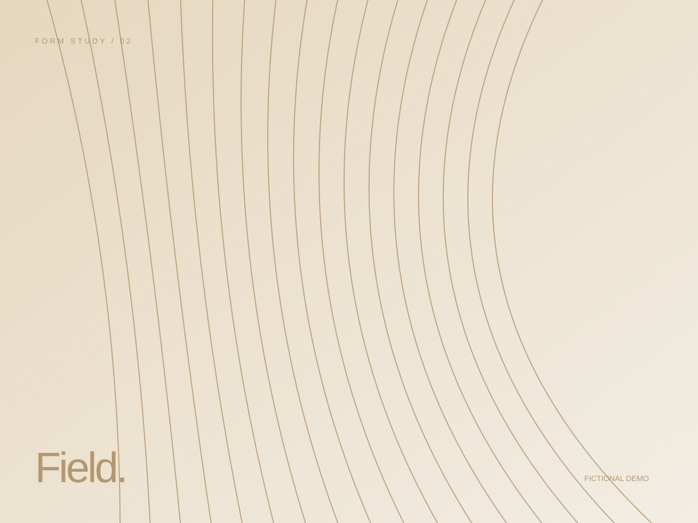

看见之前，先停一停
Pause Before You See

很多时候，我们不是缺少看见的能力，而是太快地把事物归进了熟悉的类别。停一停，观察光落在哪里，声音从哪里来，事情也许会变得不一样。
Sometimes we do not need more things to see. We need another moment before deciding what they are. Look at where the light falls and where a sound begins.
虚构示例文章，所有内容均可替换。Fictional demo article, ready for your own writing.